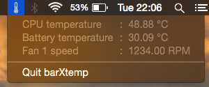
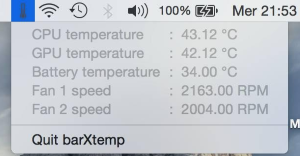

barXtemp
This is a simple OS X app to get the computer temperature. The app is accessible from the Systray and shows the CPU temperature, the integrated GPU temperature (if available), the speed of the fans and the temperature of the battery



If you have already installed Homebrew and Homebrew Cask you can install it using the following command:
$ brew cask install barxtemp